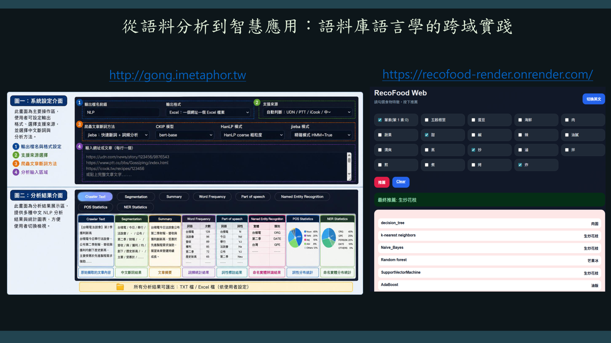

本頁流程圖說明
第1頁「第1頁」的重點，可以從投影片中的截圖、表格與流程畫面來理解：第1頁。本頁可視為整套課程架構中的概念頁，目的在於把語料庫語言學、數位工具與 AI 應用連成一條學習路徑。畫面中的標題、系統截圖、表格或流程圖，都指向同一件事：語言資料必須經過數位化、結構化與分析，才能轉化成知識與應用。可用流程圖表示為「資料→資訊→知識→模型→應用」。學生在閱讀本頁時，應把它放在整體課程脈絡中理解，不要只看單張圖，而要思考這一頁負責哪個階段、產出什麼資料、如何支援下一步分析。 若要在 HTML 教學網頁中用圖片輔助說明，可在原始投影片下方加入一條簡化流程圖：「課程主題 → 數位工具 → 語言分析 → 知識建構 → 智慧應用」，讓學生先看見大方向，再回到投影片細節閱讀。這樣的設計能保留原始書面資料，也能避免學生被大量截圖或表格分散注意力。本頁的教學文字應保持單一說明段落，不再拆成本頁重點、核心概念或課堂講稿等多個小節；閱讀時只需沿著圖片中的視覺線索，理解資料如何從原始文字逐步轉換成可分析、可標註、可輸出、可建模的語料資源。 因此，本頁最適合用來建立學生的流程觀念：每一個工具畫面都不是孤立操作，而是語料庫語言學研究中由資料收集、清理、分析到 AI 應用的連續步驟。